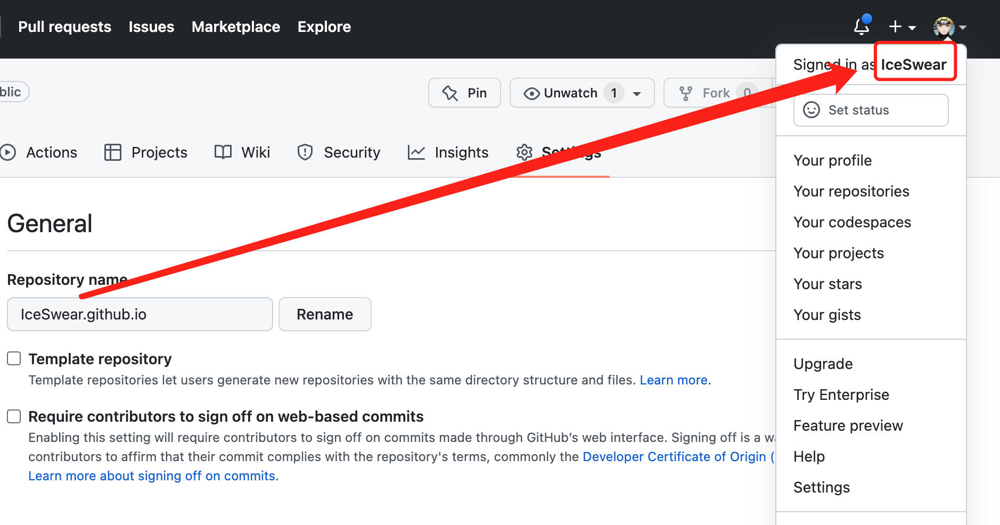
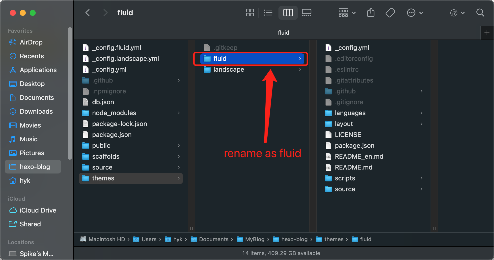
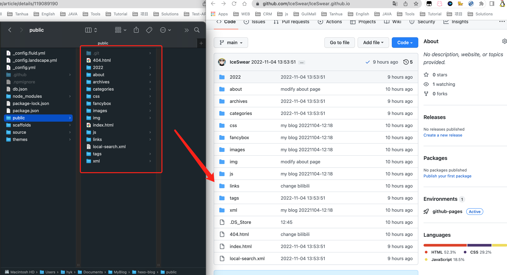

How To Build This Blog On Github
Some dudes may ask me how to build such a simple blog like this site with github domain.
Here I am going to share the details step by step,and hope it is useful to someone.
Sign Up Your Github Account
Go to Github to register your own account.It should be easiest thing to do I believe!
Create A Repository
Create a repository named as userName.github.io. Noted that userName must be same as your user name of Github.

Install Node.js On Your Laptop
It may be different for various system.Here I just demonstrate how to install it on my Macbook Air.You can just click Installation Of Node.js On MacOS for reference.
Installation Of Hexo
Follow the command to install hexo
1 | |
See version of hexo
1 | |
After installation is finished, initilize a blog module hexo-blog .
1 | |
Then enter the module to run npm
1 | |
Now, you can start the blog at your local enviroment and just visit http://localhost:4000
1 | |
Change A Better Theme-Fuild
As the original theme of Hexo is too simple, we could use a better theme.Here I will choose Fuild.
- Download the latest package from https://github.com/fluid-dev/hexo-theme-fluid/releases .Unzip the package at the root of theme and rename file as fluid.

- Configure _config.yml of hexo-blog to set theme and language.
1 | |
For more configurations, you can visit Fluid to learn.
Push On Github Pages
Method 1
Install hexo-deployer-git
1 | |
Modify _config.yml of hexo and account of GitHub
1 | |
Finally,depoly to Github
1 | |
Method 2
Directly push files of public to main branch of GitHub .

Method 3
Publish blog to your own Linux server and use Nginx to proxy.
- Edit _config.yml of hexo-blog to add this path—this path should be same as location /blog of Nginx .
1 | |
- run packaging command at the root of hexo-blog ,the generated files will be saved into public directory.
1 | |
- Copy these files to Linux server somewhere you would like to place.
1 | |
- Modify conf of Nginx .
1 | |
- Restart Nginx .
1 | |
- Finally, you can visit your blog via ip address of your server.
1 | |
Blogs Display
Well Done Man!!
Just visit iceswear.github.io to enjoy your own blogs~~